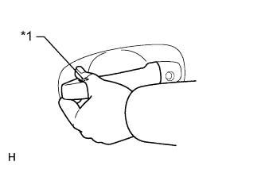
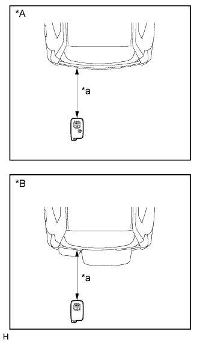
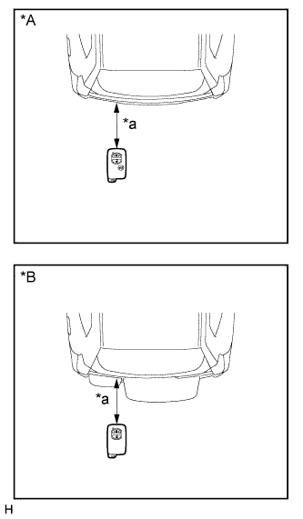
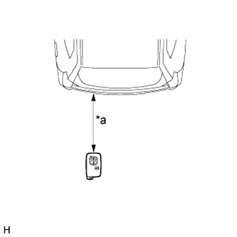
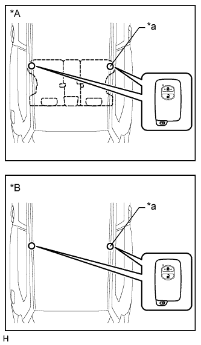
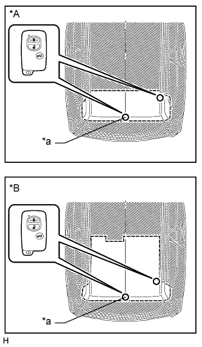

СИСТЕМА ПОСАДКИ И ЗАПУСКА (для моделей с функцией посадки) > ПРОВЕРКА РАБОТЫ СИСТЕМЫ |
| ПРОВЕРЬТЕ РАБОТУ СИСТЕМЫ ПОСАДКИ И ЗАПУСКА |
Проверьте функцию разблокировки системы посадки.
Заблокируйте двери с помощью системы дистанционного управления замками дверей. Держа ключ в руке, дотроньтесь до наружной ручки двери (датчика разблокировки) и убедитесь, что дверь разблокируется.
Проверьте область обнаружения разблокировки системы посадки.
 |
Шаг 1: Держите ключ на высоте наружной ручки двери (приблизительно 0,8 м (2,62 фута)). Направление электронного ключа должно быть таким же, как на рисунке.
| *A | Для моделей с левосторонним рулевым управлением |
| *B | Для моделей с правосторонним рулевым управлением |
| *a | 0,7 - 1,0 м (2,30 - 3,28 фута) |
Шаг 2: Убедитесь, что, когда ключ находится на расстоянии 0,7-1,0 м (2,30-3,28 фута) от автомобиля, система переходит в режим ожидания разблокировки.
 |
Шаг 3: После перехода системы в режим ожидания разблокировки дотроньтесь до датчика разблокировки на наружной ручке двери в течение 3 с. Дверь должна разблокироваться.
| *1 | Датчик разблокировки |
Шаг 4: Повторите шаги 2 и 3 для другой передней двери.
|
Шаг 5: Проверьте чувствительность датчика разблокировки. Наденьте защитные перчатки, переведите систему в режим ожидания разблокировки и убедитесь, что при прикосновении к внутренней стороне наружной ручки (выделенная область на рисунке) пальцем дверь разблокируется.
| *1 | Датчик разблокировки |
Шаг 6: Повторите шаг 5 для другой передней двери.
Проверьте работу функции блокировки системы посадки.
|  |
Шаг 1: Закройте все двери автомобиля. Когда электронный ключ находится вне автомобиля, убедитесь, что при касании датчика блокировки все двери блокируются.
| *1 | Датчик блокировки |
| *A | Для моделей с левосторонним рулевым управлением |
| *B | Для моделей с правосторонним рулевым управлением |
| *a | Примерно 0,3 м (0,984 фута) |
Шаг 2: Повторите шаг 1 для другой передней двери.
Проверьте функцию разблокировки системы посадки для двери багажного отделения.
Заблокируйте все двери автомобиля, включая дверь багажного отделения. Держа электронный ключ в руке, убедитесь, что при нажатии выключателя разблокировки двери багажного отделения все двери, включая дверь багажного отделения, разблокируются.
|  |
Проверьте область обнаружения функции разблокировки двери багажного отделения системы посадки. Держите ключ на той же высоте, на которой расположен выключатель разблокировки двери багажного отделения (приблизительно 0,8 м (2,62 фута)), направив ключ, как показано на рисунке. Убедитесь, что, когда ключ находится на расстоянии 0,7 - 1,0 м (2,30 - 3,28 фута) от автомобиля, при нажатии выключателя разблокировки двери багажного отделения все двери, включая дверь багажного отделения, разблокируются.
| *A | для моделей с механизмом открывания заднего стекла |
| *B | для моделей без механизма открывания заднего стекла |
| *a | 0,7 - 1,0 м (2,30 - 3,28 фута) |
Проверьте работу функции блокировки двери багажного отделения.
|  |
Шаг 1: Закройте все двери автомобиля. Находясь с электронным ключом снаружи автомобиля, убедитесь, что при нажатии выключателя блокировки багажного отделения все двери блокируются.
| *A | для моделей с механизмом открывания заднего стекла |
| *B | для моделей без механизма открывания заднего стекла |
| *a | Примерно 0,3 м (0,984 фута) |
Проверьте правильность работы функции открывания заднего стекла с помощью системы посадки (для моделей с механизмом открывания заднего стекла).
Заблокируйте все двери автомобиля, включая дверь багажного отделения. Имея при себе ключ, убедитесь, что при нажатии выключателя механизма открывания заднего стекла заднее стекло открывается.
|  |
Проверьте область обнаружения механизма открывания заднего стекла системы посадки. Держите ключ на той же высоте, на которой расположен выключатель разблокировки двери багажного отделения (приблизительно 0,8 м (2,62 фута)), направив ключ, как показано на рисунке. Убедитесь, что, когда ключ находится в пределах зоны радиусом 0,7 - 1,0 м (2,30 - 3,28 фута) вокруг автомобиля, нажатие выключателя механизма открывания заднего стекла вызывает открывание заднего стекла.
| *a | 0,7 - 1,0 м (2,30 - 3,28 фута) |
Проверьте работу функции зажигания системы посадки.
Когда система управления двигателем выключена: Имея при себе ключ, нажмите на педаль тормоза (для моделей с автоматической трансмиссией) или педаль сцепления (для моделей с механической трансмиссией) и убедитесь, что при нажатии выключателя зажигания снимается блокировка рулевого колеса и запускается система управления двигателем.
Когда система управления двигателем работает: Держа электронный ключ в руке, убедитесь, что при нажатии выключателя зажигания система управления двигателем останавливается, и рулевое управление блокируется.
 |
Проверьте область обнаружения системы зажигания (переднее сиденье). Направление электронного ключа должно быть таким же, как на рисунке. Проверьте запуск системы управления двигателем, когда электронный ключ находится в любом из 2 положений, показанных на рисунке. Затем повторите проверку, когда ключ находится в другом месте.
| *a | Место проверки |
 |
Для 5-дверных моделей:
Проверьте область обнаружения системы зажигания (заднее сиденье). Направление электронного ключа должно быть таким же, как на рисунке. Проверьте запуск системы управления двигателем, когда электронный ключ находится в любом из 2 положений, показанных на рисунке. Затем повторите проверку, когда ключ находится в другом месте.
| *A | Для моделей с задним сиденьем № 1 |
| *B | Для моделей без заднего сиденья № 1 |
| *a | Место проверки |
|  |
Для 3-дверных моделей:
Проверьте область обнаружения системы зажигания (заднее сиденье). Направление электронного ключа должно быть таким же, как на рисунке. Проверьте запуск системы управления двигателем, когда электронный ключ находится в любом из 2 положений, показанных на рисунке. Затем повторите проверку, когда ключ находится в другом месте.
| *A | Для моделей с задним сиденьем № 1 |
| *B | Для моделей без заднего сиденья № 1 |
| *a | Место проверки |
|  |
Для 5-дверных моделей:
Проверьте область обнаружения системы зажигания (багажное отделение). Направление электронного ключа должно быть таким же, как на рисунке. Проверьте запуск системы управления двигателем, когда электронный ключ находится в любом из 2 положений, показанных на рисунке. Затем повторите проверку, когда ключ находится в другом месте.
| *A | Для моделей с задним сиденьем № 2 |
| *B | Для моделей без заднего сиденья № 2 |
| *a | Место проверки |
 |
Для 3-дверных моделей:
Проверьте область обнаружения системы зажигания (багажное отделение). Направление электронного ключа должно быть таким же, как на рисунке. Проверьте запуск системы управления двигателем, когда электронный ключ находится в любом из 2 положений, показанных на рисунке. Затем повторите проверку, когда ключ находится в другом месте.
| *a | Место проверки |
Проверьте функцию предотвращения блокировки ключа в салоне.
Поместите ключ внутри автомобиля, закройте все двери, выполните процедуру блокировку системы посадки (прикоснитесь к датчику блокировки на наружной ручке двери) и убедитесь, что зуммер издает звуковой сигнал в течение указанного времени, и все двери разблокируются.
Откройте дверь багажного отделения, поместите ключ внутри автомобиля, когда все другие двери открыты и закрыты, закройте дверь багажного отделения и убедитесь, что зуммер издает звуковой сигнал в течение указанного времени, и дверь багажного отделения не блокируется при нажатии выключателя блокировки.
Откройте заднее стекло, поместите ключ внутри автомобиля, когда все другие двери закрыты и заблокированы, закройте заднее стекло и убедитесь, что зуммер издает звуковой сигнал в течение указанного времени, и заднее стекло открывается при нажатии выключателя механизма открывания заднего стекла.*
Проверьте функцию отмены ключа.
При включенном зажигании (IG) убедитесь, что выключатель разблокировки двери багажного отделения является единственным выключателем системы посадки и запуска, которым можно управлять.
Убедитесь, что при включенной функции отмены действия ключа (функции отмены действия системы посадки и запуска) ни одна из функций системы посадки и запуска не работает.
Проверьте работу функции обратной связи (мигание контрольных ламп аварийного состояния).
| Операция | Контрольная лампа аварийной сигнализации |
| Блокировка дверей | Мигает один раз |
| Разблокировка дверей | Мигает два раза |
| Блокировка двери багажного отделения системы посадки | Мигает один раз |
| Разблокировка двери багажного отделения системы посадки | Мигает два раза |
Убедитесь, что зуммер системы предупреждения об оставлении ключа в салоне автомобиля звучит.
Оставив ключ внутри автомобиля, закройте дверь со стороны водителя. Затем выключите зажигание или включите его (ACC).
Откройте дверь со стороны водителя и убедитесь, что предупредительный зуммер звучит прерывисто.
Проверьте, чтобы зуммер системы предупреждения об оставлении ключа в замке зажигания перестал звучать.
Когда зуммер звучит, убедитесь, что сигнал зуммера прекращается при выполнении любого из следующих действий: